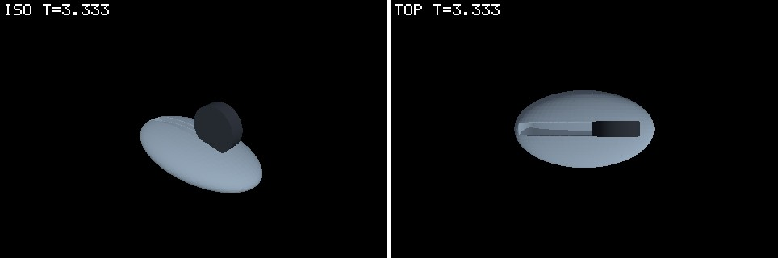
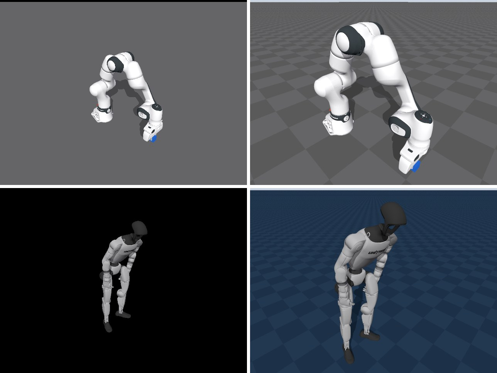
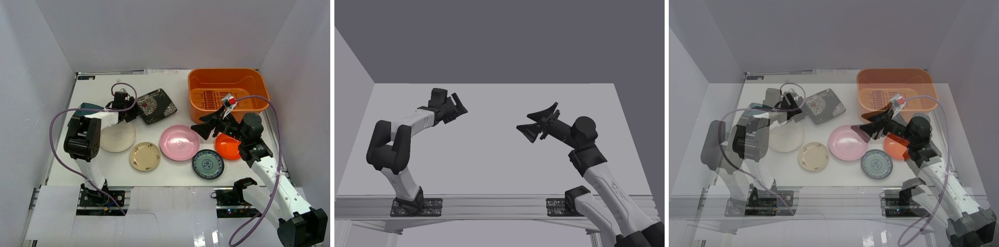
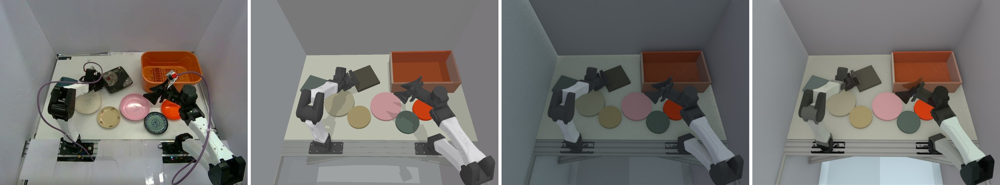

Experimental systems study · fourth iteration · in progress
Improving the Newton MCP harness for simulation setup and tuning
Abstract
Can Newton's live MCP harness be tuned until agents set up and tune simulations more efficiently with it than without it? This page tracks an ongoing improvement loop on seven tasks, six drawn from earlier reports and one from a real-robot dataset. They cover tuning humanoid controllers (including a hard clip that plain gain tuning cannot pass), fixing a grasp that slips, calibrating models against real-robot data (a DFKI double pendulum and 570 real cube tosses), adding a material-removal capability to an SDF grinding scene, and modeling a real bimanual robot station from its camera frames (ABC dataset). Each iteration runs Claude Opus 5.5 and GPT-6 Astra in concurrent pairs. The same agent solves the same task either with the live MCP or by editing and rerunning scripts, and every submission is verified in a fresh process. The transcripts are then mined for friction, and the harness is changed. After nine harness versions and 72 pairs, the loop has turned the MCP from a token cost (1.19× input tokens with h1) into a time and token saving. Across all pairs the MCP was faster in 49 (time ratio 0.83, 95% interval 0.75–0.91), and GPT-6 Astra used fewer tokens in 25 of 31 (0.70×). In iteration 7 the MCP was faster in all six pairs (0.64×). The hard humanoid task briefly separated success rates. Opus passed one of two runs with the MCP and none without, because three of those four runs quit after about 12 of their 60 minutes, believing time was up. Once h7 reported the remaining budget in MCP results and both prompts stated the start time, Opus passed all twelve runs across both conditions, finishing about a third faster with the MCP (1,039 s vs 1,559 s on average) at similar cost ($4.53 vs $4.21), because the faster live loop let it take more turns. The loop also found five ways results could silently mislead. In the live session, resets reverted the agent's own settings, quick edits could reload stale bytecode, and re-recording a CUDA graph around an already-captured MuJoCo solver corrupted memory; the last was a Newton bug, now fixed in newton-physics/newton#4377. In the study itself, the agents' sense of time was wrong, and a G1 verifier penalized controllers that precompute their plan (all G1 submissions have been re-verified). A new phase models a real robot station from its camera frames. There, every agent passed with and without the MCP, all of them fitted against the task's own image score rather than looking at screenshots, and a tuned Blender render matched the real frames about as well as the tuned ray-cast sensor (18.6 vs 18.2 dB color PSNR, with slightly lower structural scores).
Completed studies remain available unchanged: the registered visual-calibration study (v3), the three-way study with IPython and measured Panda identification (v2), and the original two-way study.
1. The improvement loop
The previous study showed that a live MCP makes photo-based calibration cheaper in tokens. This loop asks a broader question. Can the harness be tuned until it reliably helps on the setup and tuning work that earlier coding agents often failed at? The three tasks are rebuilt from earlier reports. One tunes a controller for reference-motion following (from the G1 whole-body-control report). One debugs a slipping grasp (from grasp-shake-drift and FeatherPGS). One calibrates a model against measurements from a real robot.
Each task starts from a runnable Newton example script with a realistic defect, together with a goal checked by a hidden verifier. The same agent (Claude Opus 5.5 in Claude Code, or GPT-6 Astra in Codex, both at xhigh effort) receives the same task in two conditions. In the MCP condition the script is already running live under python -m newton.mcp host. The agent can execute Python inside it, observe it, and reload the edited file, and it keeps its shell. In the no-MCP baseline it edits files and reruns scripts, so every run starts a fresh simulator process. Both trials of a pair start together on the same machine and get a 30-minute budget.
One iteration runs the pairs, reads the transcripts for friction (wasted turns, errors, source-code spelunking, redundant checks), and changes the harness. The change is committed as a new harness version, and the next iteration reruns the pairs. We report success, elapsed time (split into model and tool time), input and output tokens, API cost, and tool calls. Paired ratios below 1 favor the MCP.
| Task | Kind | Starting problem | Verified goal |
|---|---|---|---|
| Grasp drift | Debug a contact setup | Franka FR3 grasps a 4 cm cube and shakes it (scene from the grasp-shake-drift report). A robot-wide soft contact default (ke = 250) is imposed on the cube through the fingers' higher MuJoCo geom priority, so a 10 cm shake drops the cube. | Cube drift in the hand frame below 1 mm over 11.5 s of 3 cm shaking and below 5 mm over 6 s of 10 cm shaking. Motion, gains, grip, timestep, and cube are unchanged. |
| G1 tracking | Tune a controller | Unitree G1 (29 DoF, SolverMuJoCo) follows a Kimodo wave clip with joint PD servos at 10 Hz bandwidth and falls within about a second. | Robot stays upright, with root RMSE ≤ 4 cm and joint RMSE ≤ 0.05 rad on the clip and on an unseen 1.4× faster playback. No forces on the floating base; robot model unchanged. A harder clip (high5) is reported but not required. |
| Real pendulum | Identify a system from real data | Model of the DFKI torque-controlled double pendulum (design C.0) built from nominal CAD point masses without friction, armature, or damping. Ten real recordings (measured joint angles, velocities, and motor torques at about 500 Hz) are provided. | Multiple-shooting error on two held-out recordings, using 0.5 s open-loop windows started from measured states and driven by measured torques. It must be ≤ 0.060 rad on a 20 s excitation run and ≤ 0.150 rad on a 75 s run with full swings. |
| Cube toss (from i3) | Identify contact parameters from real data | A 0.1048 m, 0.37 kg acrylic cube tossed onto a wooden table (ContactNets dataset, 148 Hz tracking). The starter uses untuned contact settings (μ = 0.5, ke = 2.5 kN/m, kd = 100 N·s/m). 400 real tosses are provided, one Newton world per toss. | Open-loop rollout of 170 held-out tosses from their first frame. Mean time-averaged position error must be ≤ 0.020 m and orientation error ≤ 0.45 rad. Cube size, mass, inertia, and gravity are unchanged. |
| SDF grinding (from i4) | Build a new capability | Kinematic grinding wheel crossing an ellipsoidal workpiece whose collision geometry is a sparse texture SDF; hydroelastic collision reports the normal load, but no material is removed (scene from the sdf-grinding report, with its removal code stripped). 45-minute budget. | After the full pass, the removed volume of the SDF the collision pipeline uses must match the swept wheel within 15%. Groove probes must be clear and base probes solid (≥ 90% each). The wheel placed back into the groove must see ≤ 25% of the unground normal load. Tool path, geometry, and stiffness are unchanged. |
| G1 hard (from i6) | Design a controller | Same G1 scene, but the gated clips include high5, in which the root turns and shifts its weight. Plain joint-space PD tuning falls on it. 60-minute budget. | Upright, root RMSE ≤ 4 cm, and joint RMSE ≤ 0.05 rad on wave, high5, and an unseen 0.9× high5 playback, with no forces on the floating base. Calibrated on the one controller known to pass: Astra's iteration-4 inverse-dynamics QP. |
| ABC station twin (from i9) | Model a real scene | The YAM bimanual station of the ABC-130k dataset in its CAD form: nominal camera mount, CAD enclosure, empty table, default colors and light. The agent gets six recorded top-camera frames (640 × 480) from 1.4 s of an episode in which the arms move and the objects stay still, the joint log, and the camera calibration. 45-minute budget. | Five held-out frames, rendered through the calibrated camera with the robot posed from the log: mean edge correlation ≥ 0.67, SSIM ≥ 0.64, and color PSNR ≥ 17 dB. The arm kinematics must be unchanged, at most 60 shapes may be added, and the model must build without the recorded frames. |
| ABC arm replay (from i10) | Calibrate against real-robot data | The 6-DoF YAM arm of the ABC stations, whose joints track teleoperation position commands at about 30 Hz. The agent gets 64 arm logs from 32 episodes (about 87 minutes per arm) with measured joint positions, velocities, and torques and the commanded positions. The starter uses the gains, armature, and friction of the ABC simulation model. 30-minute budget. | Mean joint-angle RMSE ≤ 0.023 rad over 1 s open-loop windows of 16 held-out logs from 8 other episodes, driven by the logged commands. The starter scores 0.0385 rad, gains from a torque regression 0.0256, and a coordinate-descent fit 0.0212. Arm kinematics, gravity, and valid mass properties are checked. |
2. MCP versus no MCP, per iteration
Across 72 completed pairs, the MCP reduced elapsed time (geometric-mean ratio 0.83, 95% interval 0.75–0.91; faster in 49 pairs) and input tokens (0.91, 0.79–1.04; fewer in 41 pairs). Opus's API cost was 0.99× overall; GPT-6 Astra used fewer tokens in 25 of its 31 pairs (0.70×, 0.57–0.84). Of 144 verified trials, 141 passed; the three failures are all iteration-6 Opus runs on the hard humanoid task.
The harness iterations moved these numbers. With h1, the MCP cost more tokens (1.19×) and saved little time (0.94×). h2 made it much cheaper for GPT-6 Astra (0.57× tokens, 0.69× time) but more expensive for Opus (1.63× tokens) through a tool-loading setting; h3 fixed that. With h3 (12 pairs, including second Opus replicates), the MCP was faster in 9 (0.76×, 0.60–0.94) and used fewer tokens in 8 (0.74×). With h4 (10 pairs, now including the grinding task), it was faster (0.80×), used fewer tokens (0.81×), and cut Opus's API cost to 0.78×. On G1 tracking, Opus took 220 s and $0.59 instead of 639 s and $1.16, and Astra 278 s and 0.44M tokens instead of 681 s and 1.7M. On grasp drift, Opus took 405 s and $1.20 instead of 698 s and $2.04.
The MCP did not win everywhere. On the SDF grinding task both conditions finished in about five minutes at similar cost. Astra's iteration-4 cube-toss MCP run used more tokens (2.3M vs 1.5M) after it broke its live session with the MuJoCo capture bug and spent turns restarting the host by hand, which drove the h5 changes. Iteration 5 (h5, 10 pairs) came out close to parity: 0.97× time and 0.94× tokens. Astra still saved tokens (0.71×), with G1 tracking at 273 s instead of 619 s. Opus's ratio rose to 1.24×, mainly because of two runs. In one grasp run, 900 of its 1,466 s went to a shell loop waiting on its own background fresh-process check (the MCP calls took 207 s). In one grinding run it chose more self-verification calls. Neither is a harness defect, but together they show how one agent-side detour can swing a five-pair iteration. Iteration 6 (h6) is running with two replicates of the harder humanoid task.
The hard humanoid task (iteration 6, h6). Gating the high5 clip changed the picture. GPT-6 Astra passed all four runs, with and without the MCP. Each time it wrote a whole-body inverse-dynamics balance controller from scratch, and it was faster and cheaper with the MCP in the first replicate (508 s and 0.9M tokens vs 719 s and 1.9M). Opus passed one of two runs with the MCP (root RMSE 3.3 cm, just inside the limit) and neither without it. The transcripts show why the Opus runs failed: they did not run out of ideas, but judged that their time was up. Three of the four Opus runs stopped after 11–16 minutes of a 60-minute budget, saying “I'm out of time to crack high5” or “Time's nearly up”; the one success also believed only ten minutes were left at minute 12. Agents see no wall clock, and a turn-heavy search seems to feel long to them. On the other iteration-6 tasks the MCP was faster or equal for both agents, and Astra's cube-toss run took 357 s and 0.54M tokens instead of 656 s and 2.5M.
Iteration 7 (h7): a clock for the agent. With the remaining budget in every MCP result and the start time in both prompts, all six pairs passed, and the MCP was faster in every one (0.64×, 0.51–0.80). On the hard humanoid task, Opus passed all three runs in both conditions. With the MCP it finished in 903–1,089 s; without it, in 1,370–1,669 s. Its token use and API cost were similar ($4.47 vs $4.18 per run on average), because the MCP runs used the time they now knew they had for more live experiments (up to 85 tool calls). Without the MCP, the agent now checked date -u and also kept working. Iteration-6's success gap therefore measured time awareness, not the MCP. On the other iteration-7 pairs, Opus's cube toss took 246 s and $0.44 instead of 611 s and $0.78, and Astra's grasp 229 s and 0.45M tokens instead of 388 s and 1.1M.
Verifier correction. Three iteration-7 hard-task runs first failed only on the unseen slower playback, with the robot upright but a joint RMSE of 0.14 rad. The G1 verifiers produced that playback by lowering motion.fps on an already-built example, so controllers that precompute a plan from their input clip (which the task allows) kept tracking a stale 30 fps plan. The verifiers now pass the time-scaled clip as an ordinary file through --motion. All 40 G1 submissions from every iteration were re-verified. Exactly those three changed (all to pass), and every other outcome, including the iteration-6 failures, stayed the same. The tables report the re-verified results.
Iteration 8 (h8). All eight pairs passed, and the MCP was faster in six (0.80×, 0.65–0.95), but Opus used more tokens (1.21×). Across the six hard-task pairs that ran with a clock (iterations 7–8), Opus passed every run in both conditions. With the MCP it averaged 1,039 s against 1,559 s, using 6.1M against 5.2M input tokens ($4.53 vs $4.21). The live loop makes each experiment cheaper in time, so Opus runs more of them: 54–87 tool calls with the MCP against 42–75 without. The visible clock has a similar side effect on easy tasks. After passing G1 tracking, one Opus MCP run noted “With time left, I'm briefly looking at why high5 falls (it's optional)” and spent 2.2M tokens against 0.9M without the MCP. The best real-robot model of the loop also came from an iteration-8 MCP run, at 0.092 rad on the 75 s held-out pendulum recording (the reference fit reached 0.131 rad).
Iteration 9 (h9): a real scene. All eight ABC station-twin runs passed, most with a wide margin (edge correlation 0.71–0.78, SSIM 0.68–0.71, color PSNR 19.2–20.4 dB against limits of 0.67, 0.64, and 17 dB), so the task does not separate the conditions. Time was mixed (0.86× overall): Opus took 796 s with the MCP and 1,540 s without in the first replicate, but 1,060 s and 749 s in the second, and Astra 1,841 s and 1,354 s, then 647 s and 1,154 s. The clearer signal is time to a first passing score on the given frames: Opus reached it after 401 s with the MCP and 1,131 s without; the restart run spent 600 s in a single camera-fit script, while the MCP run's longest fitting call took 40 s. Astra reached it at about the same time in both conditions (589 s and 646 s) and then kept refining for another 20 minutes with the MCP. Opus paid 1.35× more with the MCP, in more turns.
| Iteration | Passes MCP · no MCP | Time | Input tokens | Output tokens | Tool calls | Cost |
|---|---|---|---|---|---|---|
| i0 (h0) | 2/2 · 2/2 | 0.91 [0.74, 1.12]; n=2 | 1.30 [1.25, 1.35]; n=2 | 1.03 [0.89, 1.19]; n=2 | 1.25 [1.21, 1.30]; n=2 | 1.07 [0.97, 1.18]; n=2 |
| i0 (h0) · Opus 5.5 | 2/2 · 2/2 | 0.91 [0.74, 1.12]; n=2 | 1.30 [1.25, 1.35]; n=2 | 1.03 [0.89, 1.19]; n=2 | 1.25 [1.21, 1.30]; n=2 | 1.07 [0.97, 1.18]; n=2 |
| i1 (h1) | 6/6 · 6/6 | 0.94 [0.66, 1.29]; n=6 | 1.19 [0.99, 1.44]; n=6 | 0.95 [0.74, 1.21]; n=6 | 1.09 [0.95, 1.26]; n=6 | 0.92 [0.74, 1.04]; n=3 |
| i1 (h1) · GPT-6 Astra | 3/3 · 3/3 | 1.24 [0.80, 1.69]; n=3 | 1.38 [0.99, 1.67]; n=3 | 1.03 [0.61, 1.39]; n=3 | 1.03 [0.79, 1.39]; n=3 | – |
| i1 (h1) · Opus 5.5 | 3/3 · 3/3 | 0.71 [0.46, 1.03]; n=3 | 1.03 [0.93, 1.23]; n=3 | 0.88 [0.65, 1.05]; n=3 | 1.16 [1.06, 1.25]; n=3 | 0.92 [0.74, 1.04]; n=3 |
| i2 (h2) | 6/6 · 6/6 | 0.81 [0.67, 1.01]; n=6 | 0.97 [0.63, 1.49]; n=6 | 0.75 [0.58, 1.03]; n=6 | 0.99 [0.70, 1.36]; n=6 | 1.19 [0.84, 1.61]; n=3 |
| i2 (h2) · GPT-6 Astra | 3/3 · 3/3 | 0.69 [0.54, 0.84]; n=3 | 0.57 [0.48, 0.75]; n=3 | 0.58 [0.45, 0.79]; n=3 | 0.76 [0.48, 1.42]; n=3 | – |
| i2 (h2) · Opus 5.5 | 3/3 · 3/3 | 0.97 [0.74, 1.28]; n=3 | 1.63 [1.30, 2.23]; n=3 | 0.97 [0.74, 1.50]; n=3 | 1.29 [1.08, 1.58]; n=3 | 1.19 [0.84, 1.61]; n=3 |
| i3 (h3) | 12/12 · 12/12 | 0.76 [0.60, 0.94]; n=12 | 0.74 [0.55, 1.02]; n=12 | 0.72 [0.55, 0.94]; n=12 | 0.79 [0.63, 1.00]; n=12 | 0.89 [0.67, 1.16]; n=7 |
| i3 (h3) · GPT-6 Astra | 5/5 · 5/5 | 0.80 [0.51, 1.13]; n=5 | 0.59 [0.41, 0.77]; n=5 | 0.58 [0.38, 0.82]; n=5 | 0.62 [0.53, 0.71]; n=5 | – |
| i3 (h3) · Opus 5.5 | 7/7 · 7/7 | 0.73 [0.55, 0.93]; n=7 | 0.88 [0.56, 1.31]; n=7 | 0.85 [0.61, 1.15]; n=7 | 0.93 [0.65, 1.26]; n=7 | 0.89 [0.67, 1.16]; n=7 |
| i4 (h4) | 10/10 · 10/10 | 0.80 [0.60, 1.03]; n=10 | 0.81 [0.57, 1.11]; n=10 | 0.71 [0.53, 0.90]; n=10 | 0.83 [0.66, 1.03]; n=10 | 0.78 [0.60, 1.02]; n=5 |
| i4 (h4) · GPT-6 Astra | 5/5 · 5/5 | 0.88 [0.58, 1.24]; n=5 | 0.75 [0.41, 1.27]; n=5 | 0.71 [0.43, 1.04]; n=5 | 0.69 [0.49, 0.93]; n=5 | – |
| i4 (h4) · Opus 5.5 | 5/5 · 5/5 | 0.73 [0.48, 1.03]; n=5 | 0.87 [0.62, 1.28]; n=5 | 0.71 [0.53, 0.94]; n=5 | 1.00 [0.82, 1.25]; n=5 | 0.78 [0.60, 1.02]; n=5 |
| i5 (h5) | 10/10 · 10/10 | 0.97 [0.69, 1.41]; n=10 | 0.94 [0.68, 1.30]; n=10 | 0.83 [0.62, 1.07]; n=10 | 0.98 [0.77, 1.27]; n=10 | 0.99 [0.79, 1.23]; n=5 |
| i5 (h5) · GPT-6 Astra | 5/5 · 5/5 | 0.93 [0.64, 1.26]; n=5 | 0.71 [0.48, 1.05]; n=5 | 0.74 [0.46, 1.07]; n=5 | 0.81 [0.60, 1.12]; n=5 | – |
| i5 (h5) · Opus 5.5 | 5/5 · 5/5 | 1.01 [0.59, 1.94]; n=5 | 1.24 [0.91, 1.71]; n=5 | 0.94 [0.70, 1.26]; n=5 | 1.19 [0.87, 1.61]; n=5 | 0.99 [0.79, 1.23]; n=5 |
| i6 (h6) | 7/8 · 6/8 | 0.88 [0.73, 1.06]; n=8 | 0.84 [0.51, 1.35]; n=8 | 0.81 [0.58, 1.10]; n=8 | 0.89 [0.64, 1.24]; n=8 | 1.11 [0.88, 1.49]; n=4 |
| i6 (h6) · GPT-6 Astra | 4/4 · 4/4 | 0.86 [0.62, 1.18]; n=4 | 0.52 [0.30, 0.85]; n=4 | 0.65 [0.38, 1.08]; n=4 | 0.63 [0.47, 0.90]; n=4 | – |
| i6 (h6) · Opus 5.5 | 3/4 · 2/4 | 0.90 [0.78, 1.05]; n=4 | 1.35 [0.88, 2.09]; n=4 | 1.00 [0.71, 1.42]; n=4 | 1.26 [0.92, 1.73]; n=4 | 1.11 [0.88, 1.49]; n=4 |
| i7 (h7) | 6/6 · 6/6 | 0.64 [0.51, 0.80]; n=6 | 0.82 [0.54, 1.24]; n=6 | 0.77 [0.58, 1.01]; n=6 | 0.90 [0.61, 1.33]; n=6 | 0.91 [0.66, 1.20]; n=4 |
| i7 (h7) · GPT-6 Astra | 2/2 · 2/2 | 0.75 [0.59, 0.96]; n=2 | 0.61 [0.41, 0.91]; n=2 | 0.64 [0.45, 0.91]; n=2 | 0.57 [0.44, 0.75]; n=2 | – |
| i7 (h7) · Opus 5.5 | 4/4 · 4/4 | 0.60 [0.47, 0.76]; n=4 | 0.95 [0.58, 1.55]; n=4 | 0.85 [0.58, 1.09]; n=4 | 1.12 [0.74, 1.69]; n=4 | 0.91 [0.66, 1.20]; n=4 |
| i8 (h8) | 8/8 · 8/8 | 0.80 [0.65, 0.95]; n=8 | 1.09 [0.70, 1.70]; n=8 | 1.02 [0.79, 1.33]; n=8 | 1.17 [0.90, 1.55]; n=8 | 1.08 [0.78, 1.49]; n=6 |
| i8 (h8) · GPT-6 Astra | 2/2 · 2/2 | 0.90 [0.70, 1.14]; n=2 | 0.81 [0.45, 1.44]; n=2 | 0.81 [0.62, 1.07]; n=2 | 1.01 [0.75, 1.35]; n=2 | – |
| i8 (h8) · Opus 5.5 | 6/6 · 6/6 | 0.77 [0.59, 0.93]; n=6 | 1.21 [0.73, 2.00]; n=6 | 1.10 [0.82, 1.48]; n=6 | 1.23 [0.89, 1.71]; n=6 | 1.08 [0.78, 1.49]; n=6 |
| i9 (h9) | 4/4 · 4/4 | 0.86 [0.54, 1.39]; n=4 | 1.05 [0.62, 1.70]; n=4 | 1.02 [0.66, 1.38]; n=4 | 1.13 [0.94, 1.36]; n=4 | 1.35 [1.20, 1.52]; n=2 |
| i9 (h9) · GPT-6 Astra | 2/2 · 2/2 | 0.87 [0.56, 1.36]; n=2 | 0.68 [0.49, 0.95]; n=2 | 0.81 [0.54, 1.21]; n=2 | 1.04 [0.86, 1.25]; n=2 | – |
| i9 (h9) · Opus 5.5 | 2/2 · 2/2 | 0.86 [0.52, 1.42]; n=2 | 1.60 [1.24, 2.07]; n=2 | 1.29 [1.15, 1.46]; n=2 | 1.23 [1.02, 1.48]; n=2 | 1.35 [1.20, 1.52]; n=2 |
| All iterations | 71/72 · 70/72 | 0.83 [0.75, 0.91]; n=72 | 0.91 [0.79, 1.04]; n=72 | 0.82 [0.74, 0.91]; n=72 | 0.95 [0.86, 1.05]; n=72 | 0.99 [0.89, 1.09]; n=41 |
| All iterations · GPT-6 Astra | 31/31 · 31/31 | 0.87 [0.75, 1.00]; n=31 | 0.70 [0.57, 0.84]; n=31 | 0.70 [0.59, 0.83]; n=31 | 0.75 [0.66, 0.86]; n=31 | – |
| All iterations · Opus 5.5 | 40/41 · 39/41 | 0.80 [0.70, 0.91]; n=41 | 1.12 [0.96, 1.30]; n=41 | 0.93 [0.83, 1.03]; n=41 | 1.13 [1.02, 1.26]; n=41 | 0.99 [0.89, 1.09]; n=41 |
All 144 trials
| Trial | Condition | Result | Quality | Time [s] | Model [s] | Tools [s] | Input tok | Output tok | Cost | Tool calls | MCP calls |
|---|---|---|---|---|---|---|---|---|---|---|---|
| i0 · G1 tracking · Opus 5.5 · p0 | Newton MCP | Pass | 0.22 | 456 | 286 | 165 | 923k | 22,178 | $1.12 | 23 | 16 |
| i0 · G1 tracking · Opus 5.5 · p0 | No MCP (edit/restart) | Pass | 0.47 | 620 | 178 | 441 | 682k | 18,695 | $0.95 | 19 | – |
| i0 · Grasp drift · Opus 5.5 · p0 | Newton MCP | Pass | 0.40 | 675 | 264 | 406 | 1.90M | 26,657 | $1.66 | 35 | 20 |
| i0 · Grasp drift · Opus 5.5 · p0 | No MCP (edit/restart) | Pass | 0.40 | 602 | 283 | 319 | 1.52M | 29,973 | $1.71 | 27 | – |
| i1 · Real pendulum · GPT-6 Astra · p0 | Newton MCP | Pass | 0.88 | 1,177 | 709 | 465 | 2.87M | 34,960 | – | 79 | 10 |
| i1 · Real pendulum · GPT-6 Astra · p0 | No MCP (edit/restart) | Pass | 0.84 | 845 | 700 | 144 | 1.72M | 25,131 | – | 57 | – |
| i1 · Real pendulum · Opus 5.5 · p0 | Newton MCP | Pass | 0.89 | 282 | 189 | 89 | 674k | 20,528 | $0.97 | 19 | 14 |
| i1 · Real pendulum · Opus 5.5 · p0 | No MCP (edit/restart) | Pass | 0.76 | 273 | 177 | 96 | 708k | 19,508 | $0.96 | 18 | – |
| i1 · G1 tracking · GPT-6 Astra · p0 | Newton MCP | Pass | 0.48 | 420 | 260 | 155 | 868k | 9,332 | – | 30 | 13 |
| i1 · G1 tracking · GPT-6 Astra · p0 | No MCP (edit/restart) | Pass | 0.48 | 523 | 441 | 82 | 875k | 15,400 | – | 38 | – |
| i1 · G1 tracking · Opus 5.5 · p0 | Newton MCP | Pass | 0.32 | 246 | 154 | 74 | 694k | 16,321 | $0.88 | 20 | 15 |
| i1 · G1 tracking · Opus 5.5 · p0 | No MCP (edit/restart) | Pass | 0.26 | 531 | 203 | 328 | 566k | 16,409 | $0.84 | 16 | – |
| i1 · Grasp drift · GPT-6 Astra · p0 | Newton MCP | Pass | 0.40 | 292 | 190 | 97 | 925k | 5,769 | – | 26 | 13 |
| i1 · Grasp drift · GPT-6 Astra · p0 | No MCP (edit/restart) | Pass | 0.40 | 173 | 96 | 76 | 587k | 4,463 | – | 26 | – |
| i1 · Grasp drift · Opus 5.5 · p0 | Newton MCP | Pass | 0.40 | 472 | 280 | 129 | 1.97M | 27,805 | $1.70 | 37 | 23 |
| i1 · Grasp drift · Opus 5.5 · p0 | No MCP (edit/restart) | Pass | 0.44 | 631 | 416 | 214 | 2.12M | 42,544 | $2.29 | 31 | – |
| i2 · Real pendulum · GPT-6 Astra · p0 | Newton MCP | Pass | 0.85 | 823 | 692 | 125 | 1.52M | 22,323 | – | 68 | 13 |
| i2 · Real pendulum · GPT-6 Astra · p0 | No MCP (edit/restart) | Pass | 0.84 | 982 | 841 | 140 | 2.02M | 28,331 | – | 48 | – |
| i2 · Real pendulum · Opus 5.5 · p0 | Newton MCP | Pass | 0.99 | 418 | 144 | 269 | 661k | 15,229 | $0.99 | 14 | 10 |
| i2 · Real pendulum · Opus 5.5 · p0 | No MCP (edit/restart) | Pass | 0.90 | 326 | 174 | 152 | 443k | 18,429 | $0.79 | 13 | – |
| i2 · G1 tracking · GPT-6 Astra · p0 | Newton MCP | Pass | 0.45 | 326 | 251 | 67 | 527k | 7,776 | – | 24 | 10 |
| i2 · G1 tracking · GPT-6 Astra · p0 | No MCP (edit/restart) | Pass | 0.42 | 598 | 484 | 114 | 998k | 17,344 | – | 50 | – |
| i2 · G1 tracking · Opus 5.5 · p0 | Newton MCP | Pass | 0.46 | 409 | 294 | 107 | 1.57M | 30,791 | $1.61 | 30 | 18 |
| i2 · G1 tracking · Opus 5.5 · p0 | No MCP (edit/restart) | Pass | 0.32 | 430 | 196 | 234 | 705k | 20,569 | $1.00 | 19 | – |
| i2 · Grasp drift · GPT-6 Astra · p0 | Newton MCP | Pass | 0.40 | 235 | 148 | 77 | 580k | 4,836 | – | 20 | 7 |
| i2 · Grasp drift · GPT-6 Astra · p0 | No MCP (edit/restart) | Pass | 0.44 | 332 | 199 | 132 | 1.22M | 8,653 | – | 31 | – |
| i2 · Grasp drift · Opus 5.5 · p0 | Newton MCP | Pass | 0.44 | 342 | 191 | 143 | 1.32M | 19,744 | $1.18 | 24 | 15 |
| i2 · Grasp drift · Opus 5.5 · p0 | No MCP (edit/restart) | Pass | 0.44 | 460 | 260 | 200 | 1.02M | 26,592 | $1.40 | 19 | – |
| i3 · Cube toss · GPT-6 Astra · p0 | Newton MCP | Pass | 0.71 | 391 | 171 | 208 | 1.00M | 6,378 | – | 26 | 10 |
| i3 · Cube toss · GPT-6 Astra · p0 | No MCP (edit/restart) | Pass | 0.77 | 540 | 166 | 374 | 1.74M | 13,909 | – | 48 | – |
| i3 · Cube toss · GPT-6 Astra · p1 | Newton MCP | Pass | 0.71 | 543 | 283 | 248 | 914k | 8,667 | – | 30 | 17 |
| i3 · Cube toss · GPT-6 Astra · p1 | No MCP (edit/restart) | Pass | 0.71 | 426 | 155 | 271 | 1.17M | 11,912 | – | 41 | – |
| i3 · Cube toss · Opus 5.5 · p0 | Newton MCP | Pass | 0.73 | 386 | 66 | 308 | 536k | 6,352 | $0.52 | 17 | 10 |
| i3 · Cube toss · Opus 5.5 · p0 | No MCP (edit/restart) | Pass | 0.75 | 401 | 104 | 297 | 712k | 10,883 | $0.72 | 22 | – |
| i3 · Cube toss · Opus 5.5 · p1 | Newton MCP | Pass | 0.73 | 244 | 61 | 172 | 348k | 5,784 | $0.41 | 13 | 8 |
| i3 · Cube toss · Opus 5.5 · p1 | No MCP (edit/restart) | Pass | 0.76 | 663 | 128 | 535 | 925k | 13,450 | $0.83 | 27 | – |
| i3 · Real pendulum · GPT-6 Astra · p0 | Newton MCP | Pass | 0.82 | 625 | 531 | 89 | 1.30M | 17,435 | – | 39 | 6 |
| i3 · Real pendulum · GPT-6 Astra · p0 | No MCP (edit/restart) | Pass | 0.85 | 712 | 590 | 121 | 1.58M | 20,961 | – | 59 | – |
| i3 · Real pendulum · Opus 5.5 · p0 | Newton MCP | Pass | 0.80 | 274 | 164 | 105 | 571k | 17,654 | $0.85 | 16 | 4 |
| i3 · Real pendulum · Opus 5.5 · p0 | No MCP (edit/restart) | Pass | 0.85 | 368 | 240 | 128 | 1.36M | 25,444 | $1.30 | 30 | – |
| i3 · G1 tracking · GPT-6 Astra · p0 | Newton MCP | Pass | 0.47 | 310 | 228 | 75 | 629k | 7,360 | – | 30 | 13 |
| i3 · G1 tracking · GPT-6 Astra · p0 | No MCP (edit/restart) | Pass | 0.36 | 898 | 737 | 160 | 2.13M | 26,226 | – | 63 | – |
| i3 · G1 tracking · Opus 5.5 · p0 | Newton MCP | Pass | 0.45 | 208 | 132 | 69 | 588k | 13,241 | $0.78 | 19 | 12 |
| i3 · G1 tracking · Opus 5.5 · p0 | No MCP (edit/restart) | Pass | 0.22 | 381 | 144 | 237 | 484k | 14,406 | $0.73 | 15 | – |
| i3 · G1 tracking · Opus 5.5 · p1 | Newton MCP | Pass | 0.46 | 251 | 168 | 76 | 707k | 16,263 | $0.89 | 19 | 13 |
| i3 · G1 tracking · Opus 5.5 · p1 | No MCP (edit/restart) | Pass | 0.46 | 351 | 94 | 257 | 329k | 9,963 | $0.55 | 11 | – |
| i3 · Grasp drift · GPT-6 Astra · p0 | Newton MCP | Pass | 0.44 | 285 | 154 | 123 | 561k | 5,356 | – | 23 | 8 |
| i3 · Grasp drift · GPT-6 Astra · p0 | No MCP (edit/restart) | Pass | 0.40 | 249 | 130 | 118 | 841k | 6,309 | – | 32 | – |
| i3 · Grasp drift · Opus 5.5 · p0 | Newton MCP | Pass | 0.44 | 501 | 271 | 222 | 1.32M | 27,172 | $1.54 | 26 | 20 |
| i3 · Grasp drift · Opus 5.5 · p0 | No MCP (edit/restart) | Pass | 0.44 | 516 | 294 | 222 | 1.17M | 29,877 | $1.62 | 23 | – |
| i3 · Grasp drift · Opus 5.5 · p1 | Newton MCP | Pass | 0.44 | 752 | 399 | 345 | 1.59M | 39,575 | $1.91 | 30 | 17 |
| i3 · Grasp drift · Opus 5.5 · p1 | No MCP (edit/restart) | Pass | 0.44 | 672 | 302 | 370 | 1.39M | 30,248 | $1.67 | 24 | – |
| i4 · Cube toss · GPT-6 Astra · p0 | Newton MCP | Pass | 0.74 | 676 | 501 | 163 | 2.35M | 12,995 | – | 53 | 29 |
| i4 · Cube toss · GPT-6 Astra · p0 | No MCP (edit/restart) | Pass | 0.74 | 550 | 176 | 374 | 1.48M | 14,379 | – | 49 | – |
| i4 · Cube toss · Opus 5.5 · p0 | Newton MCP | Pass | 0.75 | 377 | 92 | 273 | 672k | 8,935 | $0.65 | 19 | 13 |
| i4 · Cube toss · Opus 5.5 · p0 | No MCP (edit/restart) | Pass | 0.77 | 378 | 86 | 292 | 410k | 9,241 | $0.57 | 13 | – |
| i4 · Real pendulum · GPT-6 Astra · p0 | Newton MCP | Pass | 0.84 | 724 | 503 | 216 | 1.02M | 19,663 | – | 33 | 9 |
| i4 · Real pendulum · GPT-6 Astra · p0 | No MCP (edit/restart) | Pass | 0.84 | 997 | 807 | 189 | 1.96M | 29,977 | – | 58 | – |
| i4 · Real pendulum · Opus 5.5 · p0 | Newton MCP | Pass | 0.83 | 316 | 152 | 159 | 541k | 15,169 | $0.77 | 16 | 11 |
| i4 · Real pendulum · Opus 5.5 · p0 | No MCP (edit/restart) | Pass | 0.84 | 279 | 184 | 95 | 685k | 18,793 | $0.88 | 18 | – |
| i4 · G1 tracking · GPT-6 Astra · p0 | Newton MCP | Pass | 0.44 | 278 | 148 | 122 | 438k | 5,456 | – | 21 | 6 |
| i4 · G1 tracking · GPT-6 Astra · p0 | No MCP (edit/restart) | Pass | 0.31 | 681 | 558 | 122 | 1.69M | 19,992 | – | 55 | – |
| i4 · G1 tracking · Opus 5.5 · p0 | Newton MCP | Pass | 0.46 | 220 | 94 | 117 | 436k | 9,415 | $0.59 | 15 | 11 |
| i4 · G1 tracking · Opus 5.5 · p0 | No MCP (edit/restart) | Pass | 0.31 | 639 | 209 | 430 | 916k | 21,838 | $1.16 | 21 | – |
| i4 · Grasp drift · GPT-6 Astra · p0 | Newton MCP | Pass | 0.40 | 243 | 175 | 61 | 550k | 5,048 | – | 24 | 7 |
| i4 · Grasp drift · GPT-6 Astra · p0 | No MCP (edit/restart) | Pass | 0.40 | 180 | 116 | 63 | 449k | 4,531 | – | 31 | – |
| i4 · Grasp drift · Opus 5.5 · p0 | Newton MCP | Pass | 0.44 | 405 | 220 | 178 | 1.11M | 22,138 | $1.20 | 26 | 18 |
| i4 · Grasp drift · Opus 5.5 · p0 | No MCP (edit/restart) | Pass | 0.44 | 698 | 415 | 283 | 1.57M | 41,125 | $2.04 | 26 | – |
| i4 · SDF grinding · GPT-6 Astra · p0 | Newton MCP | Pass | 0.07 | 314 | 288 | 21 | 661k | 9,017 | – | 23 | 8 |
| i4 · SDF grinding · GPT-6 Astra · p0 | No MCP (edit/restart) | Pass | 0.07 | 299 | 275 | 24 | 747k | 8,738 | – | 26 | – |
| i4 · SDF grinding · Opus 5.5 · p0 | Newton MCP | Pass | 0.07 | 289 | 264 | 20 | 1.45M | 26,605 | $1.52 | 27 | 11 |
| i4 · SDF grinding · Opus 5.5 · p0 | No MCP (edit/restart) | Pass | 0.07 | 316 | 260 | 56 | 1.26M | 27,075 | $1.52 | 25 | – |
| i5 · Cube toss · GPT-6 Astra · p0 | Newton MCP | Pass | 0.76 | 548 | 328 | 208 | 949k | 9,158 | – | 29 | 18 |
| i5 · Cube toss · GPT-6 Astra · p0 | No MCP (edit/restart) | Pass | 0.74 | 401 | 218 | 182 | 1.13M | 10,136 | – | 43 | – |
| i5 · Cube toss · Opus 5.5 · p0 | Newton MCP | Pass | 0.76 | 311 | 84 | 215 | 630k | 8,732 | $0.66 | 18 | 10 |
| i5 · Cube toss · Opus 5.5 · p0 | No MCP (edit/restart) | Pass | 0.70 | 656 | 111 | 545 | 679k | 11,733 | $0.73 | 24 | – |
| i5 · Real pendulum · GPT-6 Astra · p0 | Newton MCP | Pass | 0.84 | 964 | 793 | 164 | 2.30M | 26,608 | – | 62 | 9 |
| i5 · Real pendulum · GPT-6 Astra · p0 | No MCP (edit/restart) | Pass | 0.86 | 706 | 609 | 97 | 1.54M | 20,668 | – | 45 | – |
| i5 · Real pendulum · Opus 5.5 · p0 | Newton MCP | Pass | 0.81 | 316 | 145 | 165 | 633k | 15,412 | $0.78 | 17 | 12 |
| i5 · Real pendulum · Opus 5.5 · p0 | No MCP (edit/restart) | Pass | 0.88 | 456 | 236 | 220 | 848k | 26,182 | $1.18 | 20 | – |
| i5 · G1 tracking · GPT-6 Astra · p0 | Newton MCP | Pass | 0.47 | 273 | 157 | 107 | 504k | 5,229 | – | 23 | 6 |
| i5 · G1 tracking · GPT-6 Astra · p0 | No MCP (edit/restart) | Pass | 0.32 | 619 | 502 | 116 | 1.18M | 17,854 | – | 46 | – |
| i5 · G1 tracking · Opus 5.5 · p0 | Newton MCP | Pass | 0.22 | 301 | 175 | 118 | 817k | 17,715 | $0.95 | 21 | 15 |
| i5 · G1 tracking · Opus 5.5 · p0 | No MCP (edit/restart) | Pass | 0.27 | 436 | 191 | 245 | 544k | 20,265 | $0.95 | 15 | – |
| i5 · Grasp drift · GPT-6 Astra · p0 | Newton MCP | Pass | 0.40 | 264 | 169 | 85 | 458k | 5,366 | – | 22 | 7 |
| i5 · Grasp drift · GPT-6 Astra · p0 | No MCP (edit/restart) | Pass | 0.40 | 292 | 163 | 128 | 1.12M | 7,347 | – | 33 | – |
| i5 · Grasp drift · Opus 5.5 · p0 | Newton MCP | Pass | 0.17 | 1,466 | 352 | 1,106 | 2.28M | 35,116 | $1.90 | 41 | 29 |
| i5 · Grasp drift · Opus 5.5 · p0 | No MCP (edit/restart) | Pass | 0.44 | 415 | 230 | 184 | 1.04M | 24,116 | $1.35 | 20 | – |
| i5 · SDF grinding · GPT-6 Astra · p0 | Newton MCP | Pass | 0.07 | 339 | 313 | 21 | 769k | 8,646 | – | 32 | 10 |
| i5 · SDF grinding · GPT-6 Astra · p0 | No MCP (edit/restart) | Pass | 0.07 | 367 | 309 | 57 | 931k | 9,952 | – | 28 | – |
| i5 · SDF grinding · Opus 5.5 · p0 | Newton MCP | Pass | 0.07 | 349 | 305 | 39 | 2.08M | 30,548 | $1.88 | 33 | 13 |
| i5 · SDF grinding · Opus 5.5 · p0 | No MCP (edit/restart) | Pass | 0.07 | 267 | 228 | 39 | 1.58M | 23,128 | $1.64 | 25 | – |
| i6 · Cube toss · GPT-6 Astra · p0 | Newton MCP | Pass | 0.74 | 357 | 203 | 143 | 543k | 5,374 | – | 22 | 13 |
| i6 · Cube toss · GPT-6 Astra · p0 | No MCP (edit/restart) | Pass | 0.71 | 656 | 223 | 433 | 2.50M | 17,163 | – | 50 | – |
| i6 · Cube toss · Opus 5.5 · p0 | Newton MCP | Pass | 0.77 | 326 | 68 | 246 | 464k | 7,184 | $0.55 | 16 | 9 |
| i6 · Cube toss · Opus 5.5 · p0 | No MCP (edit/restart) | Pass | 0.75 | 387 | 103 | 284 | 611k | 11,350 | $0.68 | 20 | – |
| i6 · G1 hard · GPT-6 Astra · p0 | Newton MCP | Pass | 0.65 | 508 | 446 | 54 | 898k | 14,005 | – | 35 | 15 |
| i6 · G1 hard · GPT-6 Astra · p0 | No MCP (edit/restart) | Pass | 0.37 | 719 | 573 | 146 | 1.89M | 20,792 | – | 60 | – |
| i6 · G1 hard · GPT-6 Astra · p1 | Newton MCP | Pass | 0.42 | 721 | 611 | 101 | 1.09M | 19,688 | – | 45 | 19 |
| i6 · G1 hard · GPT-6 Astra · p1 | No MCP (edit/restart) | Pass | 0.50 | 546 | 472 | 73 | 1.15M | 15,510 | – | 43 | – |
| i6 · G1 hard · Opus 5.5 · p0 | Newton MCP | Pass | 0.83 | 738 | 576 | 154 | 3.67M | 58,734 | $3.02 | 52 | 45 |
| i6 · G1 hard · Opus 5.5 · p0 | No MCP (edit/restart) | Fail | inf | 675 | 359 | 315 | 1.39M | 36,885 | $1.77 | 26 | – |
| i6 · G1 hard · Opus 5.5 · p1 | Newton MCP | Fail | inf | 705 | 485 | 212 | 2.67M | 49,087 | $2.53 | 39 | 28 |
| i6 · G1 hard · Opus 5.5 · p1 | No MCP (edit/restart) | Fail | 1.31 | 968 | 472 | 496 | 1.65M | 48,407 | $2.24 | 28 | – |
| i6 · Grasp drift · GPT-6 Astra · p0 | Newton MCP | Pass | 0.40 | 323 | 163 | 151 | 755k | 5,076 | – | 23 | 7 |
| i6 · Grasp drift · GPT-6 Astra · p0 | No MCP (edit/restart) | Pass | 0.44 | 306 | 146 | 159 | 987k | 7,470 | – | 39 | – |
| i6 · Grasp drift · Opus 5.5 · p0 | Newton MCP | Pass | 0.40 | 657 | 332 | 317 | 1.38M | 32,493 | $1.64 | 27 | 17 |
| i6 · Grasp drift · Opus 5.5 · p0 | No MCP (edit/restart) | Pass | 0.40 | 658 | 327 | 331 | 1.34M | 32,676 | $1.68 | 24 | – |
| i7 · Cube toss · Opus 5.5 · p1 | Newton MCP | Pass | 0.71 | 246 | 64 | 170 | 379k | 6,378 | $0.44 | 14 | 11 |
| i7 · Cube toss · Opus 5.5 · p1 | No MCP (edit/restart) | Pass | 0.72 | 611 | 121 | 490 | 738k | 12,988 | $0.78 | 22 | – |
| i7 · G1 hard · GPT-6 Astra · p0 | Newton MCP | Pass | 0.39 | 626 | 549 | 68 | 1.23M | 17,144 | – | 39 | 15 |
| i7 · G1 hard · GPT-6 Astra · p0 | No MCP (edit/restart) | Pass | 0.30 | 655 | 575 | 79 | 1.35M | 18,771 | – | 52 | – |
| i7 · G1 hard · Opus 5.5 · p0 | Newton MCP | Pass | 0.43 | 1,089 | 821 | 260 | 7.48M | 86,044 | $5.06 | 85 | 61 |
| i7 · G1 hard · Opus 5.5 · p0 | No MCP (edit/restart) | Pass (re-verified) | 0.37 | 1,370 | 726 | 643 | 4.14M | 75,216 | $3.78 | 46 | – |
| i7 · G1 hard · Opus 5.5 · p1 | Newton MCP | Pass | 0.41 | 1,051 | 749 | 295 | 6.61M | 79,257 | $4.55 | 80 | 55 |
| i7 · G1 hard · Opus 5.5 · p1 | No MCP (edit/restart) | Pass | 0.62 | 1,429 | 796 | 632 | 4.94M | 82,557 | $4.29 | 52 | – |
| i7 · G1 hard · Opus 5.5 · p2 | Newton MCP | Pass (re-verified) | 0.38 | 903 | 739 | 155 | 4.12M | 78,198 | $3.81 | 54 | 41 |
| i7 · G1 hard · Opus 5.5 · p2 | No MCP (edit/restart) | Pass (re-verified) | 0.41 | 1,669 | 791 | 879 | 6.21M | 80,595 | $4.46 | 62 | – |
| i7 · Grasp drift · GPT-6 Astra · p2 | Newton MCP | Pass | 0.40 | 229 | 144 | 76 | 447k | 4,213 | – | 18 | 6 |
| i7 · Grasp drift · GPT-6 Astra · p2 | No MCP (edit/restart) | Pass | 0.44 | 388 | 233 | 154 | 1.09M | 9,361 | – | 41 | – |
| i8 · Real pendulum · Opus 5.5 · p2 | Newton MCP | Pass | 0.62 | 465 | 246 | 214 | 1.18M | 26,276 | $1.30 | 26 | 22 |
| i8 · Real pendulum · Opus 5.5 · p2 | No MCP (edit/restart) | Pass | 0.85 | 482 | 340 | 142 | 1.23M | 35,862 | $1.58 | 27 | – |
| i8 · G1 hard · GPT-6 Astra · p0 | Newton MCP | Pass | 0.31 | 585 | 528 | 48 | 897k | 14,945 | – | 33 | 12 |
| i8 · G1 hard · GPT-6 Astra · p0 | No MCP (edit/restart) | Pass | 0.52 | 833 | 720 | 112 | 1.98M | 24,228 | – | 44 | – |
| i8 · G1 hard · Opus 5.5 · p0 | Newton MCP | Pass | 0.35 | 839 | 713 | 116 | 4.52M | 76,040 | $3.76 | 61 | 41 |
| i8 · G1 hard · Opus 5.5 · p0 | No MCP (edit/restart) | Pass | 0.60 | 1,943 | 1,075 | 868 | 8.80M | 109,214 | $6.14 | 75 | – |
| i8 · G1 hard · Opus 5.5 · p1 | Newton MCP | Pass | 0.40 | 1,067 | 871 | 187 | 5.83M | 90,846 | $4.58 | 66 | 58 |
| i8 · G1 hard · Opus 5.5 · p1 | No MCP (edit/restart) | Pass | 0.51 | 1,442 | 695 | 746 | 3.86M | 72,913 | $3.62 | 48 | – |
| i8 · G1 hard · Opus 5.5 · p2 | Newton MCP | Pass | 0.52 | 1,285 | 995 | 283 | 7.86M | 102,773 | $5.41 | 87 | 64 |
| i8 · G1 hard · Opus 5.5 · p2 | No MCP (edit/restart) | Pass | 0.72 | 1,500 | 586 | 914 | 2.92M | 60,598 | $2.94 | 42 | – |
| i8 · G1 tracking · Opus 5.5 · p1 | Newton MCP | Pass | 0.26 | 789 | 365 | 416 | 2.15M | 37,929 | $1.90 | 44 | 31 |
| i8 · G1 tracking · Opus 5.5 · p1 | No MCP (edit/restart) | Pass | 0.26 | 763 | 198 | 565 | 874k | 21,197 | $1.11 | 21 | – |
| i8 · Grasp drift · Opus 5.5 · p0 | Newton MCP | Pass | 0.44 | 539 | 333 | 198 | 1.19M | 33,715 | $1.58 | 25 | 18 |
| i8 · Grasp drift · Opus 5.5 · p0 | No MCP (edit/restart) | Pass | 0.40 | 719 | 358 | 360 | 1.91M | 37,205 | $1.98 | 33 | – |
| i8 · SDF grinding · GPT-6 Astra · p0 | Newton MCP | Pass | 0.07 | 310 | 269 | 27 | 600k | 8,179 | – | 23 | 6 |
| i8 · SDF grinding · GPT-6 Astra · p0 | No MCP (edit/restart) | Pass | 0.07 | 271 | 258 | 13 | 417k | 7,652 | – | 17 | – |
| i9 · ABC station twin · GPT-6 Astra · p0 | Newton MCP | Pass | 0.93 | 1,841 | 1,551 | 282 | 4.73M | 45,814 | – | 81 | 47 |
| i9 · ABC station twin · GPT-6 Astra · p0 | No MCP (edit/restart) | Pass | 0.93 | 1,354 | 871 | 482 | 5.00M | 37,898 | – | 65 | – |
| i9 · ABC station twin · GPT-6 Astra · p1 | Newton MCP | Pass | 0.94 | 647 | 604 | 32 | 1.59M | 17,620 | – | 44 | 25 |
| i9 · ABC station twin · GPT-6 Astra · p1 | No MCP (edit/restart) | Pass | 0.93 | 1,154 | 975 | 178 | 3.24M | 32,678 | – | 51 | – |
| i9 · ABC station twin · Opus 5.5 · p0 | Newton MCP | Pass | 0.93 | 796 | 547 | 240 | 4.39M | 54,206 | $3.18 | 59 | 42 |
| i9 · ABC station twin · Opus 5.5 · p0 | No MCP (edit/restart) | Pass | 0.95 | 1,540 | 463 | 1,077 | 3.53M | 47,292 | $2.66 | 58 | – |
| i9 · ABC station twin · Opus 5.5 · p1 | Newton MCP | Pass | 0.91 | 1,060 | 632 | 419 | 5.74M | 64,011 | $3.72 | 68 | 59 |
| i9 · ABC station twin · Opus 5.5 · p1 | No MCP (edit/restart) | Pass | 0.93 | 749 | 436 | 313 | 2.77M | 43,763 | $2.44 | 46 | – |
3. What each iteration changed
Each version is a commit on the Newton branch eric-heiden/newton-live-mcp, driven by what the previous iteration's transcripts showed.
h0 → h1. Iteration-0 agents wrote the same frame-by-frame evaluation loops in almost every call. They grepped the MuJoCo solver source to learn which contact parameters were in effect, and a missing import newton invalidated the scene. h1 added rollout(), solver_contacts(), health(), a preloaded newton, and non-invalidating errors for hosted scripts. It also added automatic CUDA-graph recapture after live attribute edits, and compiling reloaded scripts from source; a regression test had shown that a script edited within the same second could reload stale bytecode. Correction: an earlier version of this page said an iteration-0 agent's live shake-amplitude edit was silently ignored because it was baked into a captured graph. That was wrong: the example passes the amplitude to a kernel launched outside its graphs, so the edit took effect.
h1 → h2. In iteration 1, Astra's first call to solver_contacts() found the grasp's root cause directly: the fingers' higher geom priority imposes a soft material with a 0.2 s solref time constant on the cube. Opus still read solver source for the same fact; in h1 the helper was listed only in the server instructions, not in the task's host guide. MCP tool results were smaller than the no-MCP shell output (72k vs 110k characters on grasp drift), so the token overhead had to come from elsewhere. It came from about 2.4k tokens of tool schemas and instructions resent on every turn, and from about 10% more turns. h2 advertises only newton_execute and newton_rebuild with short instructions (about 0.8k tokens), names the deciding material in the contact report, lists the helpers in the host guide, and hosts two worker copies of the scene for parallel or background sweeps. To skip the tool-search round trip, it also set ENABLE_TOOL_SEARCH=false.
h2 → h3. Iteration 2 exposed three problems. (1) ENABLE_TOOL_SEARCH=false loads the schemas of every deferred built-in Claude Code tool, not just Newton's: Opus MCP trials started at 30k tokens instead of 15k. h3 marks only the Newton server alwaysLoad, which gives 14.9k with no tool-search round trip. (2) Checkpoints and resets restored every scalar attribute of the hosted example, so a look-ahead or gain the agent set before rollout(start=True) was silently reverted, and one sweep returned identical rows. h3 rewinds only the scalars that step() itself advances. (3) An Opus grasp session crashed with CUDA error 700 after live solver experiments. Reproducing it showed that h1's recapture was unsafe. Newton examples capture a graph around the solver's first step, and SolverMuJoCo allocates buffers during that step, so those buffers belong to the first graph. Recording a second graph around the same solver either segfaults or silently corrupts the simulation (a grasped cube ended 99 m below the table). A one-box scene fails the same way, and one eager step before the first capture avoids it. h3 recaptures only when example.solver has been replaced, which is safe. For other changes it reports that values inside the captured graphs keep their old values until a rebuild. recapture() refuses to run around the same solver. The grasp and G1 MCP trials of iterations 1 and 2 hit such recaptures (for example 10 times in the i2 Opus grasp trial). Their live numbers may have been corrupted, although their verified submissions were not affected.
h3 → h4. With h3, the MCP's first turn was still 2.5k tokens larger than the no-MCP baseline's. Part of that came from the host guide appearing twice: once in the task prompt and again in the server instructions. h4 adds --no-app-guide to the stdio bridge, and the harness uses it because its prompts carry the guide. Hosting was also extended to kinematic examples without a dynamics solver or second state (such as the grinding scene), and the host guide now says that non-array objects such as SDFs are not rewound by reset.
h4 → h5. Iteration 4 exposed three gaps. (1) Hosted examples run with a null viewer, so geometry an example draws itself in render(), such as the ground workpiece surface, was invisible to observe, and an agent plotted it with matplotlib instead. The host's viewer now records log_mesh calls, and color observations composite those meshes over the model's shapes by depth; auto-framing uses mesh bounds. (2) The MuJoCo capture bug struck again through ordinary task code. Astra called the task's own rollout() on the example's already-captured solver, and the live process could no longer allocate memory. An eager step on scratch states followed by solver.reset() prevents this even in the minimal repro, so the host process now warms every SolverMuJoCo this way; physics is unchanged (the grasp scene matches to seven digits). (3) With the CUDA context broken, the agent had to restart the host by hand. newton_rebuild(arguments={"restart": true}) now re-executes the host process, and the MCP client re-reads the connection file and retries when its server restarts. The host guide also recommends workers.map over submit for sweeps, because polling a future had cost an extra turn per sweep.
h5 → h6. The MuJoCo capture bug is now fixed where it originated. newton-physics/newton#4377 creates the solver's inverse shape mapping at construction instead of lazily inside the first (usually captured) step, with tests for discarded, retained, and replayed graphs. The loop branch merges that fix, drops the host's eager warm-up workaround, and goes back to re-recording an example's CUDA graphs after any cell that edits example attributes. As a result, kernel arguments baked into graphs pick up live changes again. With the fix, every earlier failing scenario (the one-box repro, and the grasp scene with its old graph dropped, retained, or replayed) now runs correctly.
h6 → h7. Because Opus misjudged elapsed time on the hard task, h7 gives MCP sessions a deadline (--deadline on the host, set by the harness to the trial budget), and every status in a tool result then includes time_left_s. To keep the comparison fair, both conditions' prompts now also state the task's UTC start time, so a script-only agent can check the clock with date; the MCP only makes the remaining time passive and ever-present.
h7 → h8. Profiling the long hard-task transcripts showed that newton_rebuild returned the full describe payload (application guide, operation list, limits; about 4.6k characters). One Opus run rebuilt 14 times, adding 65k characters that stayed in context for every later turn. Rebuild now returns a compact status of about 180 characters. h8 also carries the corrected G1 verifiers.
| Version | Commit | Changes |
|---|---|---|
| h0 | working tree before 46dfe56d | ExampleHost serves an unmodified example script live. Checkpoints include the example's own arrays and scalars, and rebuild reloads the script in-process. Code profile with five tools. |
| h1 | 46dfe56d | rollout(), solver_contacts(), and health() helpers; newton preloaded; Python errors keep hosted scenes valid; automatic CUDA-graph recapture after live attribute edits (unsafe, see h3); quiet Warp logs; rebuild compiles from source. |
| h2 | d7058ca9 | Lean profile (execute + rebuild; per-turn schema and instructions about 0.8k instead of 2.4k tokens); ENABLE_TOOL_SEARCH=false (regression for Claude Code); contact report names the deciding material; two worker copies for parallel and background sweeps; zero-argument rollout probes. |
| h3 | de507713 | Newton server alwaysLoad instead of disabling tool search; resets keep agent-assigned settings; graph recapture only for replaced solvers, with notes for changes that cannot reach captured graphs; cube-toss task. |
| h4 | 8ce42bf9 | Server instructions without the duplicated app guide; hosting for solver-less, single-state examples; SDF-grinding task with per-task time budgets. |
| h5 | 59806597 | Observations include meshes the example logs in render(); mesh-bounds auto-framing; eager warm-up of every SolverMuJoCo in the host process (makes graph recapture safe); host restart through newton_rebuild with automatic client reconnect; one-call worker sweeps in the guide. |
| h6 | 24adbd3e | Merges the SolverMuJoCo recapture fix (newton-physics/newton#4377); automatic graph recapture after live attribute edits without a solver warm-up; hard G1 tracking task (high5 clip gated, 60-minute budget). |
| h7 | cd8d790f | Session deadline and time_left_s in every MCP result; UTC start time in both conditions' prompts. |
| h8 | fb8446d8 | Compact rebuild result (about 180 instead of 4,600 characters); G1 time-scaled playback passed as a clip through --motion. |
| h9 | 8995aa8b | Visual phase. Observations are supersampled with a sky, a ground checker, projected framing, and calibrated OpenCV intrinsics; the camera sensor renders only the requested world. Adds observe(backend="rtx"), render(), and compare_images() with image metrics. Newton fixes: MJCF floors, builtin textures, .msh meshes, transparent shapes, ViewerRTX with ovrtx 0.5, and sensor light controls. |
| h10 | 9ecbff75 | The rtx backend is advertised only when ovrtx is installed (h9 offered it in an environment without it). Observe intrinsics accept RealSense inverse Brown-Conrady distortion. Textured models render textures by default. Newton fixes: headless ViewerGL renders through EGL on the GPU (it crashed without a display or fell back to the CPU under Xvfb), and observations drop shapes hidden after finalize(). Adds the ABC arm-replay task. |

render(); before h5, observations showed only the wheel.4. Real-robot calibration data
The system-identification task uses public measurements from the DFKI underactuated double pendulum (BSD-3-Clause). The robot has two quasi-direct-drive AK80-6 motors with 6:1 gearing, a 0.2 m first link, and a 0.3 m second link. Its fourteen design C.0 system-identification runs record measured joint angles, velocities, and motor torques. Runs 00–09 are given to the agent, while runs 10 (20 s excitation) and 11 (75 s, full swings, 300 Hz) are held out. The model replicates one pendulum per evaluation window as a separate Newton world, so a whole recording is evaluated in one batched SolverMuJoCo rollout (about 0.5 s on the study GPU).
The thresholds were set before any agent trial, from three reference parameter sets. The nominal starter misses badly. The published DFKI identification, mapped to a physically valid Newton model, roughly halves the error but does not pass. A direct Nelder–Mead fit of all twelve Newton parameters to runs 07–09 passes with margin. So the gates reward calibrating the simulator itself, beyond copying published numbers.
The agents solved this task quickly and in the same way in both conditions. They fitted the identifiable base parameters by linear least squares on inverse dynamics, then refined them with their own NumPy (Opus) or C++ (Astra) forward models under the multiple-shooting objective, and used Newton only to confirm. On a two-link system the simulator is not needed in the inner loop, so the live MCP has little to offer here. Its value should show on systems where the simulator is the only practical forward model, with contact or many degrees of freedom.
| Parameters | 20 s excitation [rad] | 75 s full swings [rad] |
|---|---|---|
| Starter (nominal CAD point masses) | 0.143 | 0.336 |
| DFKI published identification (model 3.0, mapped to Newton) | 0.070 | 0.176 |
| Reference Nelder–Mead fit through Newton (runs 07–09) | 0.038 | 0.131 |
| Verification threshold | 0.060 | 0.150 |
| Iteration 1, Opus: MCP / no MCP | 0.040 / 0.040 | 0.133 / 0.113 |
| Iteration 1, Astra: MCP / no MCP | 0.037 / 0.040 | 0.131 / 0.127 |
From iteration 3 a second real dataset is used where the simulator is the practical forward model: the ContactNets cube tosses (BSD-3-Clause), 570 hand tosses of an acrylic cube onto a wooden table tracked at 148 Hz (Pfrommer et al., CoRL 2020). The cube's size, mass, and inertia are measured and fixed. The agent calibrates contact behavior (friction, stiffness, damping, torsional friction, table height, solver settings) so that open-loop rollouts from each toss's first frame reproduce the recorded bounces, slides, and tumbles. Each toss is one Newton world, and a CUDA-graph rollout of all 400 training tosses takes about 2–4 s.
The thresholds were set before any agent trial. Published parameters do not transfer. The ContactNets friction coefficient with untuned stiffness halves the position error but leaves orientation unchanged. The MuJoCo fit of Acosta et al., mapped to Newton's contact model, is worse than friction alone, because stiffness and damping mean different things across simulators and timesteps. A Nelder–Mead fit of five Newton contact parameters on 200 training tosses passes with margin.
| Contact model | Position [m] | Orientation [rad] |
|---|---|---|
| Starter (μ = 0.5, ke = 2.5 kN/m, kd = 100 N·s/m) | 0.102 | 1.068 |
| ContactNets friction μ = 0.18, starter stiffness and damping | 0.042 | 1.103 |
| Acosta et al. MuJoCo fit mapped to Newton (μ = 0.22) | 0.072 | 1.306 |
| Reference Nelder–Mead fit (μ 0.177, ke 2.8 kN/m, kd 1.0 kN·s/m, table −1.4 mm) | 0.014 | 0.321 |
| Verification threshold | 0.020 | 0.450 |
5. Next phase: visual fidelity and real-world scenes
The loop so far measured tasks where a simulation is judged by numbers. The next phase targets tasks where the agent must also get the look right: modeling a real scene, such as the bimanual workcells of the ABC dataset, so that renders from a calibrated camera match real video, and then tuning its behavior against the recording. That puts the MCP's images under scrutiny, since a frontier model can only dial in what it can see.
A first audit of the h8 observations found three problems beyond plain aesthetics. (1) The MJCF importer hid every collision shape of a model that also has visual meshes, including world floor planes, which have no visual twin. The Unitree G1 therefore floated on a black void in every viewer and camera sensor. (2) MuJoCo's procedural checker textures were not imported, so such floors got an arbitrary palette color. (3) SensorTiledCamera always rendered every world. The MCP had to budget world count × width × height pixels to show one world, so in the 400-world cube-toss task, any observation above about 100 × 100 pixels was refused. All three are fixed in Newton itself, with regression tests. The camera sensor gained a world_ids option that renders only selected worlds; the 400-world scene now renders a supersampled 640 × 480 view in about 20 ms.
The observations themselves now supersample color 2×2 and resolve it in linear light on the GPU. They draw a sky gradient behind the scene and a checker of a reported round cell size (for example 0.25 m) on ground planes, which gives the model scale and motion cues. They fit the camera to the scene's projected extent rather than a loose bounding sphere. observe also accepts calibrated OpenCV intrinsics (focal lengths, principal point, distortion), so renders can be compared pixel for pixel with frames from a real camera.

observe(view="iso") call before (left, h8) and after (right) the first visual-fidelity changes: 2×2 supersampling, a sky gradient, a ground checker of reported cell size, framing fitted to the scene's projected extent, and the G1's MJCF floor, which the importer used to hide.Two heavier renderers were evaluated. Newton's ViewerRTX (the OVRTX path tracer) had broken with ovrtx 0.5, which renamed render variables and changed its DLPack interface, and it hung whenever a DISPLAY was set without a running X server. Both are fixed. It is now an optional MCP backend: observe(backend="rtx") renders the same camera and world with 16 path-traced samples in about 1 s per frame after a one-time scene export of about 20 s, against about 20 ms for the camera sensor. Blender 4.5 (Cycles on CUDA) renders a USD export of the same scene in about 5 s per frame.
In the research round's comparisons against real ABC frames, photographic rendering alone did not bring renders measurably closer to the real images. What mattered was a look the agent can tune (camera pose, light, colors) and a number to tune against. Two changes follow from that. The camera sensor gained ambient and light-color controls, and its lighting now follows the model's up axis; Y-up scenes used to be lit from below. The MCP workspace gained render() and compare_images(), which report PSNR, SSIM, and edge correlation against a reference frame and show mismatch, edge, or blend panels. A live Blender connection does not look necessary: USD export plus an optional RTX or Blender render covers the photographic case, and it keeps the agent's loop fast.
Replaying real ABC episodes in Newton turned up more importer and renderer gaps, now fixed with tests. MJCF geoms with zero alpha, such as the camera housings, rendered as opaque black and blocked the view of a camera pulled back by a fit. MuJoCo's binary .msh meshes, which the ABC scenes use, could not be loaded.
The first ABC task, the station twin (Table 1), starts from the nominal CAD model of the YAM station (Figure 3). The agent must fit the camera mount and the enclosure (the real one is narrower and deeper than the CAD), model the bin and the seven dishes on the table, and match the colors and lighting. The verifier renders five held-out frames between the given ones through the calibrated camera, with its own copy of the renderer, and scores them against the recording. Reference solutions set the thresholds. The starter scores 0.37 edge correlation, 0.53 SSIM, and 14.0 dB color PSNR. Fitting only the camera and the enclosure reaches 0.65, 0.63, and 15.1 dB. Adding the objects with fitted colors reaches 0.72, 0.66, and 18.2 dB. Iteration 9 runs this task in pairs, and its results will appear in Table 2.
Replaying the logs also exposed the real arm's controller. The measured torques fit a PD law on the command from one frame earlier (R² 0.82–0.98 on most joints), with gains of about 74 N m/rad on the large joints, against 40 in the ABC simulation model. This became the second ABC task, arm replay (Table 1), which iteration 10 runs in pairs.

Blender as an MCP backend. The research round's Blender bridge is now an optional MCP backend. observe(backend='blender') renders with EEVEE ('blender_cycles' path-traces) through the same camera as the sensor, including calibrated intrinsics; object centroids agree with sensor renders to within 0.5 px. Newton stays the source of truth: one world is exported once to a long-running Blender process, and each render streams only shape and camera poses over a Unix socket (about 1 s per warm EEVEE frame on the shared GPU, 2–4 s at the real camera's 640 × 480 under load). A blender(code) helper runs bpy in the same process to edit materials, lights, and exposure. The backend is advertised only when Blender is installed. Figure 4 shows what it does and does not buy on the ABC twin.

6. Findings so far
Frontier agents solve these setup, tuning, and capability tasks with or without the MCP, once they know how much time they have. 141 of 144 verified trials passed. The three failures were all Opus runs on the hard humanoid task that stopped far too early. After the harness began reporting remaining time, all twelve later runs of that task passed.
Harness details decide whether the MCP saves or costs tokens. The same live session went from 1.19× input tokens (h1) to 0.74–0.81× (h3–h4) through changes in how tools are advertised and loaded, what the helpers return, and how resets behave. One setting pushed Opus to 1.63× before it was reverted. Per-turn fixed context and extra turns explain the overhead, not tool output.
The MCP reliably saves wall-clock time; whether it saves tokens depends on how the agent spends that time. Across all pairs it was faster in 49 of 72 (0.83×), and on the long hard task by about a third. GPT-6 Astra turned the faster loop into fewer tokens (0.70×). Opus tends to turn it into more experiments, especially on long or open-ended tasks (1.10× tokens overall, but 0.97× API cost thanks to prompt caching).
Agents need a clock, and a clock changes their behavior. On the one task that required a long search, Opus repeatedly stopped after 11–16 of its 60 minutes because it believed its budget was spent. Reporting the remaining time with every MCP result, and stating the start time in the prompt, fixed that in both conditions, and all twelve later runs passed. The same visibility leads agents to spend spare budget on optional goals after passing. A harness can supply the clock, but only the task can say whether the spare time is worth spending.
For modeling a real scene, a score beats a prettier picture. Given a renderer that matches the verifier and a scoring function, none of the eight station-twin runs called observe, the RTX backend, or compare_images; every agent fitted the camera, geometry, and colors in loops over the score and looked at its own composites with show(). In a controlled comparison on the same twin and frames, Blender EEVEE with tuned exposure and per-object colors reached 18.6 dB color PSNR, 0.65 SSIM, and 0.69 edge correlation, against 18.2 dB, 0.66, and 0.72 for the tuned sensor. Untuned, Blender scored 14.5 dB, and exposure alone recovered 3.9 dB. Photographic rendering helps people judge a scene, but for agents fitting to real frames the gains come from tunable look parameters and a metric.
A live session needs guards that a restart workflow gets for free. Three silent-divergence bugs surfaced only through agent use: settings reverted by reset, stale bytecode after a quick edit, and memory corruption from recapturing a CUDA graph around a warm solver. A live harness is only as trustworthy as its bookkeeping, and each fix has a regression test.
The MuJoCo capture issue was a Newton bug, now fixed at the source. SolverMuJoCo created a persistent mapping lazily inside its first step. Newton examples capture that step in a CUDA graph, and any second capture around the same solver then crashed or corrupted the simulation, on upstream main as well (repro in Section 7). newton-physics/newton#4377 creates the mapping at construction. Live tooling found this bug because it re-records graphs in ways that one-shot scripts never do.
Explaining effective solver parameters saves investigation. Where an agent used the contact report, it found the grasp's root cause (finger priority overriding the cube's material) in its first call. Agents without it read solver kernels to reconstruct the same fact.
Verifiers need the same scrutiny as the harness. A G1 verifier changed the playback rate after construction and silently failed controllers that precompute a plan. It was caught only because an agent claimed to pass all clips and the verification disagreed. Re-verifying all 40 G1 submissions changed exactly the three affected outcomes.
7. Limits
This is an exploratory loop, not a registered study. The harness changes between iterations, three to seven pairs per agent and iteration cannot separate small effects from noise, and tasks are added as the loop goes. All pairs ran on one shared 4-CPU machine with a MIG GPU slice. Concurrent pairs control for load between conditions but not across iterations, and reference fits sometimes ran during trials.
Iteration 0 has no Astra trials. One iteration-1 Astra G1 pair was excluded because the operator accidentally terminated its live host while testing workers; it was rerun with the same harness. Live results in some iteration-1 and iteration-2 MCP trials may have been corrupted by the recapture bug described in Section 3; their verified submissions were not. Codex does not report API cost. Because every task so far is solvable in both conditions, these results say nothing yet about whether the MCP raises success on harder problems. Agent-side detours, such as a shell loop waiting on the agent's own background job, can dominate a single pair's time; they are kept in all aggregates.
8. Source and data
Newton branch eric-heiden/newton-live-mcp: the MCP host and helpers are in newton/_src/mcp, and the loop harness, tasks, and verifiers in tools/mcp_evaluation/v4 (run_v4.py; dp_real/prepare_data.py, cube_toss/prepare_data.py, abc_twin/prepare_data.py, and abc_arm/prepare_data.py rebuild the data files from the public datasets; the ABC tasks use the ungated Voxel51 MCAP mirror of ABC-130k, Apache-2.0). Trial data: loop.json (every trial's metrics and paired ratios) and loop-transcripts.zip (prompts, specs, summaries, verifications, submitted scripts, agent transcripts, and host logs, with loopback tokens redacted). CUDA-graph recapture repro: mujoco_recapture_repro.py.